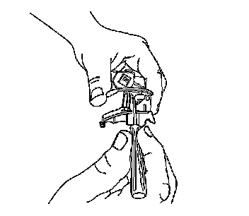
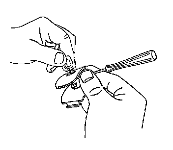
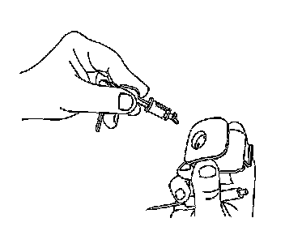

Instrument Panel Compartment Door Lock Cylinder Replacement
Instrument Panel Compartment Door Lock Cylinder Replacement
Removal Procedure

1. Remove the instrument panel compartment latch. Refer to Instrument Panel Compartment Door Latch Replacement (Cadillac) Instrument Panel Compartment Door Latch Replacement (Except Cadillac) .
2. Position the instrument panel compartment latch fork bolt in the up position.
3. Insert the key into the instrument panel compartment lock cylinder.
4. Rotate the instrument panel compartment lock cylinder clockwise to the 3 o'clock position with the key.
5. With the key in position, apply a light load and depress the retainer tumbler through the poke hole at the right hand side of the instrument panel compartment latch.

6. Rotate the key until the instrument panel compartment lock cylinder rotates to about the 5 o'clock position.
This will line up the notch at the rear of the instrument panel compartment lock cylinder with the tab in the instrument panel compartment latch housing.

7. Remove the instrument panel compartment lock cylinder from the instrument panel compartment latch by pulling on the key.
Installation Procedure
1. Position the instrument panel compartment latch fork bolt in the up position.
2. Grasp the instrument panel compartment lock cylinder. Depress the rear-most, light-colored tumbler that is flush with the instrument panel compartment lock cylinder surface.
3. Insert the key.
All the tumblers will now stay depressed.
4. Insert the instrument panel compartment lock cylinder, with the key inserted, into the instrument panel compartment latch housing. Ensure that the front projection pin is at the appropriate 8 o'clock position.
The instrument panel compartment lock cylinder will drop into place.
5. Rotate the key counterclockwise until the key stops.
6. Remove the key, the tumblers will now release.
The instrument panel compartment lock cylinder is now locked into the instrument panel compartment latch housing.
7. Install the instrument panel compartment latch. Refer to Instrument Panel Compartment Door Latch Replacement (Cadillac) Instrument Panel Compartment Door Latch Replacement (Except Cadillac) .